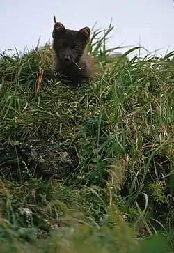
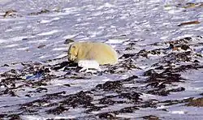
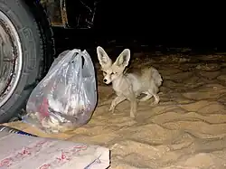
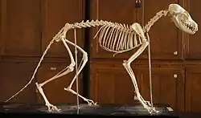
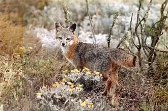
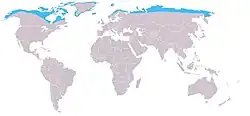
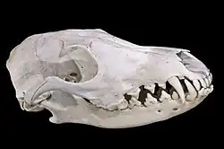
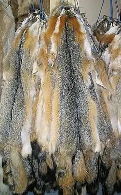
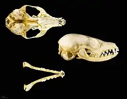

Medien
fuchs
Bilder
Karten
Töne
nur groß geladene
aus meinen Themen
16 Bilder und 1 Ton aus 5 Artikeln auch ohne das Wort "Fuchs" in der Unterschrift, über die Bedeutung
 groß
groß
Rotfuchs in einem dänischen Tierpark
Rotfuchs
Bellender Fuchs
Rotfuchs · Ton

250 pxJunges, blaue Morphe
Polarfuchs
 250 px
250 px
Zwei Fenneks im Tokioter Zoo. Details der Fellzeichnung sowie die Ohr- und Zehenbehaarung sind gut zu erkennen.
Fennek
 250 px
250 px
Silberfuchs Zoo Osnabrück
Rotfuchs

250 pxBegegnung zwischen Polarfuchs und Eisbär
Polarfuchs
 250 px
250 px
Graufuchs
Graufuchs

250 pxFenneks suchen regelmäßig menschliche Siedlungen und Zeltlager auf, um dort nach Nahrung zu suchen.
Fennek

250 pxSkelett (Lomonossow-Universität, Moskau)
Rotfuchs

260 pxDer Insel-Graufuchs wird als eigenständige Art neben dem Graufuchs betrachtet.
Graufuchs

250 pxVerbreitungsgebiet des Polarfuchses
Polarfuchs

250 pxSchädel
Rotfuchs

190 pxNordamerikanische Grisfuchsfelle
Graufuchs

250 pxSchädel von Vulpes zerda, Sammlung Museum von Toulouse
Fennek